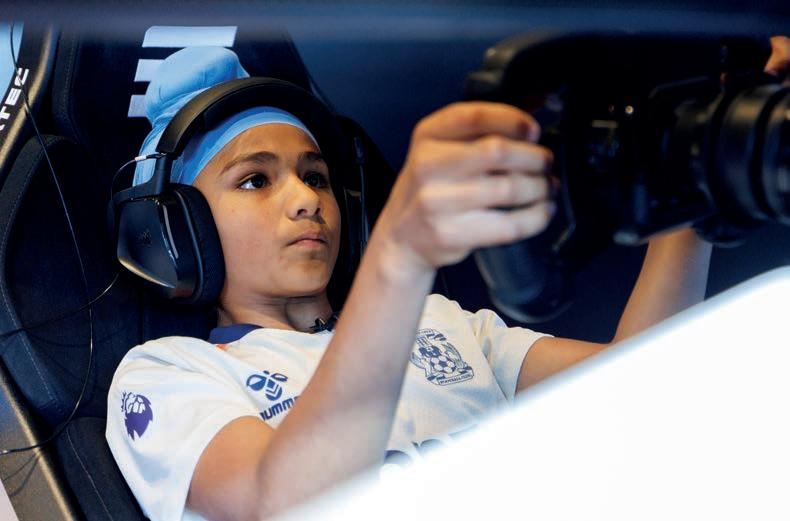

Road to F1
A plan, not a dream.
Formula 1 doesn't take applications. Every driver on the grid got there the same way — through the karting ladder, one funded, executed season at a time. This is Dhian's ladder, mapped to 2030.
01 — The Pathway
Six seasons. One road.
Micro Max — British Champion
Wera Tools British title won on the final lap of the final race. Team GB at the Rotax Grand Finals in Bahrain.
Mini Max — British Championship + Europe
First season in the step-up class. British Championship rounds, the RMCIT at Le Mans, and European outings — podiums already on the board.
Mini Max — Title Campaign
A second Mini Max season, championship-focused. Experience meets machinery at the top of the class.
Junior Max — The Step Up
Faster, more physical racing in the senior junior class — where future F1 drivers are made and measured.
F4 Testing — First Single-Seater
A full testing programme in Formula 4 machinery: aero, braking, race procedures — the karting graduate's conversion course.
Formula 4 — Race Debut
The first rung of single-seater racing — and the start of the road to Formula 1 proper.
02 — What It Takes
The programme behind the promise.
Engineered every lap
Championships are won on data. DHR Elite Performance engineers every session — telemetry, setup, racecraft. No lap goes unmeasured.
Telemetry · Setup · CoachingTraining like a professional
Simulator programmes, physical conditioning and race study. The driver is an athlete first — the kart just responds to it.
Simulator · Fitness · StudyA structure that delivers
Family, advisor, partners and Coventry City FC — the support system that lets a driver do driver things.
Team DSP · Advisors · Partners
03 — The Honest Part
Talent isn't scarce. Funding is.
When Dhian first made national news in 2023, the BBC reported that rival families spend up to £3,000 on a single race weekend, while the Pahals competed on a very tight budget. A full British championship season runs to tens of thousands of pounds. A season of British F4 — the 2030 target — typically costs around £350,000.
None of that is a barrier to ambition. It is a reason to partner early: every pound placed now compounds across six seasons of escalating exposure.
£3K
A rival's race weekend — BBC, 2023
£10Ks
A full national season
£350K
A year of British F4
2030
F4 debut — the target
Next — Partnership
Six seasons. One road. Your brand.
Every step on the pathway is a placement opportunity. Build the plan together.